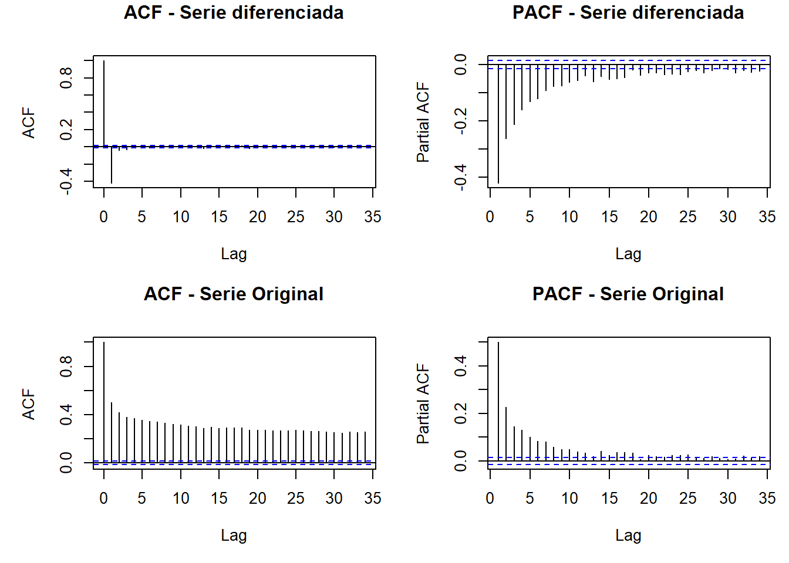

Capítulo: 3 Estacionariedad
3.1 Preprocesamiento y visualización.
Christian Vera, Yuli Deaquiz y Juan Rodríguez
04/05/2025
Una serie temporal estacionaria es aquella cuyas propiedades no dependen del momento en que se observa .Por lo tanto, las series temporales con tendencias o con estacionalidad no son estacionarias: la tendencia y la estacionalidad afectarán el valor de la serie temporal en diferentes momentos. Una serie temporal estacionaria no presenta patrones predecibles a largo plazo.
Esto implica que si la serie es estacionaria, estaríamos prediciendo que las características estadísticas de nuestra serie de tiempo serán las mismas en el futuro como en el pasado.
Para poder comprobar si la serie es estacionaria se puede utilizar algunos métodos estadísticos, entre los más utilizados se encuentran la prueba de Dickey-Fuller Aumentada (ADF) y la prueba de Kwiatkowski-Phillips-Schmidt-Shin (KPSS). Para nuestro caso usamos las dos pruebas como se muestran a continuación:
Code
library(knitr)
library(kableExtra)
library(tidyverse)
library(lubridate)
library(zoo)
library(forecast)
url <- "https://raw.githubusercontent.com/christianveram/Series_de_tiempo/refs/heads/main/bases/temperaturas_final.csv"
datos <- read.csv(url)
datos$time <- as.Date(datos$time)
datos_filtrados <- datos %>%
mutate(fecha = as.Date(time)) %>%
arrange(fecha) %>%
filter(fecha >= as.Date("1975-01-01"))
# 'tavg' a dos decimales
datos_filtrados <- datos_filtrados %>%
mutate(tavg = round(tavg, 2))Prueba de Dickey-Fuller.
Code
# Prueba de Dickey-Fuller
# Ho: La serie no presenta estacionariedad
# Ha: La serie presenta estacionariedad
## Prueba de Dickey-Fuller
# Ejecutar la prueba Dickey-Fuller
library(tseries)
library(knitr)
library(kableExtra)
# Ejecutar la prueba
adf_result <- adf.test(datos_filtrados$tavg)
# Crear tabla de resultados
adf_table <- data.frame(
"Test Statistic" = round(adf_result$statistic, 4),
"Lag Order" = adf_result$parameter,
"p-value" = round(adf_result$p.value, 4),
"Alternative" = as.character(adf_result$alternative),
check.names = FALSE
)
# Mostrar tabla con kableExtra
kable(adf_table, align = "c") %>%
kable_styling(
bootstrap_options = c("striped", "hover", "condensed", "responsive"),
full_width = FALSE,
position = "center")| Test Statistic | Lag Order | p-value | Alternative | |
|---|---|---|---|---|
| Dickey-Fuller | -14.5464 | 26 | 0.01 | stationary |
Con un p-valor de 0.01, se rechaza la hipótesis nula de no estacionariedad, lo que indica que la serie de la variable temperatura promedio es estacionaria. Esto implica que sus propiedades estadísticas, como la media y la varianza, se mantienen constantes en el tiempo y que la serie no presenta una tendencia sostenida.
Prueba KPSS
Code
# Prueba KPSS
# Ho: La serie es estacionaria
# Ha: La serie no es estacionaria
library(tseries)
library(knitr)
library(kableExtra)
kpss_result <- kpss.test(datos_filtrados$tavg)
# Crear tabla de resultados
kpss_table <- data.frame(
"KPSS Statistic" = round(kpss_result$statistic, 3),
"Truncation Lag Parameter" = kpss_result$parameter,
"p-value" = round(kpss_result$p.value, 4),
check.names = FALSE
)
# Mostrar tabla con numeración automática
kable(kpss_table, align = "c") %>%
kable_styling(
bootstrap_options = c("striped", "hover", "condensed", "responsive"),
full_width = FALSE,
position = "center"
)| KPSS Statistic | Truncation Lag Parameter | p-value | |
|---|---|---|---|
| KPSS Level | 34.079 | 14 | 0.01 |
El p-valor es 0.01. Dado que este valor es menor que el nivel de significancia de 0.05, se rechaza la hipótesis nula de estacionariedad. Esto indica que la serie temporal no es estacionaria en nivel, lo cual sugiere que presenta una tendencia sistemática a lo largo del tiempo, como un posible aumento progresivo en la temperatura promedio.
Con base en los resultados de las pruebas realizadas, se puede concluir que la serie es estacionaria en diferencias, según el test ADF, pero no lo es en tendencia, según el test KPSS. Por lo tanto, se recomienda llevar a cabo el proceso de diferenciación para lograr la estacionariedad de la serie.
3.2 Diferenciación
La diferenciación es una técnica utilizada en el análisis de series temporales para hacer que una serie no estacionaria se vuelva estacionaria. Esto se logra calculando las diferencias entre valores consecutivos de la serie temporal. Así mismo, ayuda a eliminar las tendencias en los datos, haciendo que la serie sea estacionaria. Además, facilita el Modelado ya que al hacer que la serie sea estacionaria, se facilita la aplicación de modelos de series temporales como ARIMA.
Para la variable de temperatura promedio se aplicó una diferenciación de primer orden, la cual calcula la diferencia entre cada valor y el anterior en la serie temporal.
Posteriormente se realizó nuevamente los test estadísticos de comprobación de la estacionariedad.
Dickey-Fuller Test (Diferenciación)
Code
# Prueba de Dickey-Fuller
# Ho: La serie no presenta estacionariedad
# Ha: La serie presenta estacionariedad
## Prueba de Dickey-Fuller
estacionariedad=diff(datos_filtrados$tavg)
#adf.test(estacionariedad)
# Ejecutar la prueba Dickey-Fuller
library(tseries)
library(knitr)
library(kableExtra)
# Ejecutar la prueba
adf_result1 <- adf.test(estacionariedad)
# Crear tabla de resultados
adf_table <- data.frame(
"Test Statistic" = round(adf_result1$statistic, 4),
"Lag Order" = adf_result1$parameter,
"p-value" = round(adf_result1$p.value, 4),
"Alternative" = as.character(adf_result1$alternative),
check.names = FALSE
)
# Mostrar tabla
kable(adf_table, align = "c") %>%
kable_styling(
bootstrap_options = c("striped", "hover", "condensed", "responsive"),
full_width = FALSE,
position = "center")| Test Statistic | Lag Order | p-value | Alternative | |
|---|---|---|---|---|
| Dickey-Fuller | -40.1841 | 26 | 0.01 | stationary |
En este caso el valor p de 0.01 indica que se puede rechazar la hipótesis nula de que la serie no es estacionaria, siendo menor al umbral de significancia 0.05.
KPSS Test (Diferenciación).
Code
# Prueba KPSS
# Ho: La serie es estacionaria
# Ha: La serie no es estacionaria
#kpss.test(estacionariedad)
library(tseries)
library(knitr)
library(kableExtra)
kpss_result2 <- kpss.test(estacionariedad)
# Crear tabla de resultados
kpss_table <- data.frame(
"KPSS Statistic" = round(kpss_result2$statistic, 3),
"Truncation Lag Parameter" = kpss_result2$parameter,
"p-value" = round(kpss_result2$p.value, 4),
check.names = FALSE)
# Mostrar tabla
kable(kpss_table, align = "c") %>%
kable_styling(
bootstrap_options = c("striped", "hover", "condensed", "responsive"),
full_width = FALSE,
position = "center")| KPSS Statistic | Truncation Lag Parameter | p-value | |
|---|---|---|---|
| KPSS Level | 0.001 | 14 | 0.1 |
En este caso, el test KPSS aplicado a la serie diferenciada da un valor p de 0.1, lo que sugiere que no hay suficiente evidencia para rechazar la hipótesis nula de estacionariedad en el nivel, indicando que la serie es estacionaria después de la diferenciación. En comparación con el test anterior, donde el valor p era 0.01, que indicaba que la serie no era estacionaria, esta diferencia sugiere que la diferenciación eliminó la tendencia y permitió que la serie se volviera estacionaria. Finalmente, se puede concluir en los dos test estadísticos con un nivel de confianza del 95% que la serie es estacionaria luego de aplicar la diferenciación.
Code
library(forecast)
par(mfrow = c(2, 2), mar = c(5, 5, 3, 1))
# ACF para estacionariedad
acf(estacionariedad, lag.max = 34, main = "ACF - Serie diferenciada")
# PACF para estacionariedad
pacf(estacionariedad, lag.max = 34, main = "PACF - Serie diferenciada")
# ACF para datos_filtrados$tavg
acf(datos_filtrados$tavg, lag.max = 34, main = "ACF - Serie Original")
# PACF para datos_filtrados$tavg
pacf(datos_filtrados$tavg, lag.max = 34, main = "PACF - Serie Original")
Figura 3.1 Análisis de Autocorrelación (ACF y PACF) de la serie de temperatura promedio de la ciudad de Bogotá DC.
A partir de la Figura 3.1 se puede extraer lo siguiente:
ACF - Serie diferenciada:
Presenta un pico negativo significativo en el Lag 1, lo que indica una autocorrelación negativa inmediata entre los valores consecutivos después de la diferenciación. Los rezagos posteriores se encuentran dentro de los límites de confianza, lo que sugiere ausencia de autocorrelación significativa en los siguientes periodos, lo cual es un indicativo de una serie estacionaria.
PACF - Serie diferenciada:
Muestra un pico negativo significativo en el Lag 1, mostrando una fuerte correlación parcial negativa con el primer rezago. Las barras de los rezagos posteriores se mantienen dentro de los límites de confianza, indicando que no hay efectos significativos más allá del primer rezago. Esto sugiere que la serie ha alcanzado estabilidad en sus propiedades estadísticas.
ACF - Serie Original:
Se observa una reducción lenta de las autocorrelaciones, con barras que permanecen fuera de los límites de confianza en varios rezagos, lo que indica una dependencia temporal y sugiere visualmente que la serie no es estacionaria. Sin embargo, los resultados del test ADF aplicado a la serie original indican que se puede considerar estacionaria desde el punto de vista estadístico
PACF - Serie Original:
Presenta un pico significativo en el Lag 1 (positivo), lo que indica una fuerte correlación parcial con el primer rezago. Aunque los valores disminuyen rápidamente, algunos rezagos posteriores muestran ligeras significancias, reforzando la idea de no estacionariedad en la serie original y sugiere la necesidad de aplicar una diferenciación para estabilizarla.
En resumen, el análisis mostró que la serie de temperatura promedio en Bogotá no es estacionaria al inicio debido a una tendencia, pero al aplicar una diferenciación de primer orden se logra estabilizar. Esto es clave para poder aplicar modelos como ARIMA y hacer predicciones más precisas y confiables.